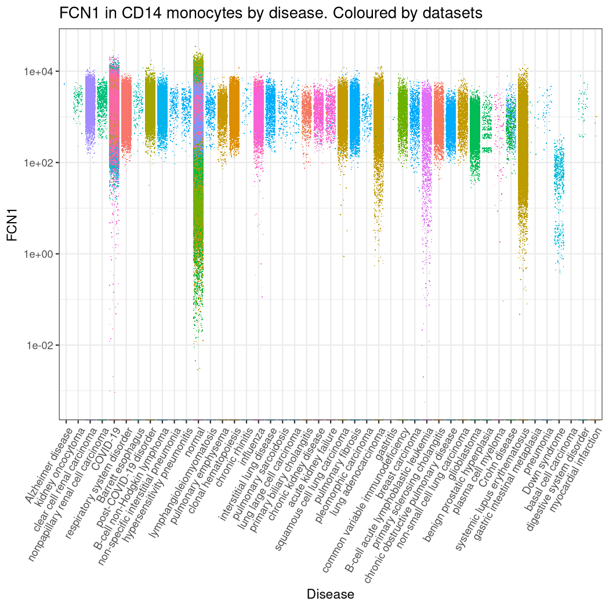
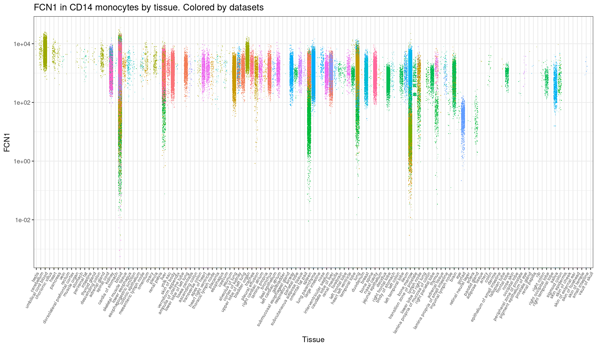

Introduction
cellNexus extends the functionality of
CuratedAtlasQueryR by providing a unified interface for
querying and accessing the harmonised, curated, and reannotated
CELLxGENE human cell atlas. It enables reproducible, programmatic
exploration of large-scale single-cell datasets, supporting data
retrieval at the cell, sample, and dataset levels with flexible
filtering based on tissue, cell type, experimental condition, and other
metadata. Retrieved data are returned in formats ready for downstream
analysis.
The package integrates over 44 million human cells processed through a standardised pipeline, including consistent quality control, normalisation, and unified abundance representations (e.g., single-cell, counts-per-million, normalised expression, and pseudobulk). This harmonisation facilitates efficient cross-dataset comparison and integration.
Data are hosted on the ARDC Nectar Research Cloud, and most functions access them via web requests; therefore, an active network connection is required for typical use.
While both cellNexus and CuratedAtlasQueryR rely on precomputed expression layers, cellNexus adopts a more standardised and transparent processing workflow. This includes explicit removal of empty droplets and dead cells, followed by harmonised quality control, normalisation, and multi-layer data generation, ensuring alignment with evolving CELLxGENE releases.
plot of chunk fig-logo
plot of chunk fig-funders
plot of chunk fig-funders
plot of chunk fig-funders
plot of chunk fig-funders
plot of chunk fig-funders
plot of chunk fig-funders
Query interface
Load and explore the metadata
Load the metadata
By default, get_metadata() loads harmonised annotations.
Metadata is saved to get_default_cache_dir() unless a
custom path is provided via the cache_directory argument. The
metadata variable can then be re-used for all subsequent
queries.
The unified pseudobulk AnnData object was generated after quality control and retaining at least 15,000 intersecting genes across samples, and uploaded to Zenodo 10.5281/zenodo.21388944.
The following sections demonstrate the metadata, quality control, generation of raw and normalised counts, and pseudobulk construction for the specified query.
metadata <- get_metadata()
metadata
#> # Source: SQL [?? x 37]
#> # Database: DuckDB 1.4.3 [unknown@Linux 5.14.0-570.123.1.el9_6.x86_64:R 4.5.3/:memory:]
#> cell_id observation_joinid dataset_id sample_id sample_ experiment___ run_from_cell_id sample_heuristic age_days tissue_groups nFeature_expressed_i…¹ nCount_RNA
#> <dbl> <chr> <chr> <chr> <chr> <chr> <chr> <chr> <int> <chr> <int> <dbl>
#> 1 1 `;+Wwc*oS9 574e9f9e-f8… b290d7ef… b290d7… "" <NA> BPH556PrGA2_Fco… 25915 prostate 1025 113.
#> 2 1 s<8rT5qe3X 574e9f9e-f8… b290d7ef… b290d7… "" <NA> BPH556PrGA2_Fco… 25915 prostate 2586 77.6
#> 3 2 Se=|eIq*={ 574e9f9e-f8… b290d7ef… b290d7… "" <NA> BPH556PrGA2_Fco… 25915 prostate 992 57.6
#> 4 2 dcNO`ReB5o 574e9f9e-f8… b290d7ef… b290d7… "" <NA> BPH556PrGA2_Fco… 25915 prostate 2002 163.
#> 5 3 F_Jf~Pzj<! 574e9f9e-f8… b290d7ef… b290d7… "" <NA> BPH556PrGA2_Fco… 25915 prostate 730 93.6
#> 6 16 i(U>N;cU4_ 574e9f9e-f8… b290d7ef… b290d7… "" <NA> BPH556PrGA2_Fco… 25915 prostate 718 342.
#> 7 4 MK~^fbPVCl 574e9f9e-f8… b290d7ef… b290d7… "" <NA> BPH556PrGA2_Fco… 25915 prostate 846 99.8
#> 8 4 J+o&MJmtR5 574e9f9e-f8… b290d7ef… b290d7… "" <NA> BPH556PrGA2_Fco… 25915 prostate 829 123.
#> 9 12 $LL!IWeW`F 574e9f9e-f8… b290d7ef… b290d7… "" <NA> BPH556PrGA2_Fco… 25915 prostate 2482 61.8
#> 10 18 $zB;$PErEP 574e9f9e-f8… b290d7ef… b290d7… "" <NA> BPH556PrGA2_Fco… 25915 prostate 828 86.6
#> # ℹ more rows
#> # ℹ abbreviated name: ¹nFeature_expressed_in_sample
#> # ℹ 25 more variables: empty_droplet <lgl>, cell_type_unified_ensemble <chr>, is_immune <lgl>, subsets_Mito_percent <int>, subsets_Ribo_percent <int>,
#> # high_mitochondrion <lgl>, high_ribosome <lgl>, scDblFinder.class <chr>, sample_chunk <int>, cell_chunk <int>, sample_pseudobulk_chunk <int>,
#> # file_id_cellNexus_single_cell <chr>, file_id_cellNexus_pseudobulk <chr>, count_upper_bound <dbl>, nfeature_expressed_thresh <dbl>, inverse_transform <chr>,
#> # alive <lgl>, cell_annotation_blueprint_singler <chr>, cell_annotation_monaco_singler <chr>, cell_annotation_azimuth_l2 <chr>, ethnicity_flagging_score <dbl>,
#> # low_confidence_ethnicity <chr>, .aggregated_cells <int>, imputed_ethnicity <chr>, atlas_id <chr>Quality control
cellNexus metadata applies standardised quality control to filter out empty droplets, dead or damaged cells, doublets, and samples with low gene counts.
Join Census metadata
Original Census annotations can be retrieved by the function
get_census_metadata(), and registered to lazy tibble format
by DuckDB
census_metadata <- cellNexus:::get_census_metadata("2024-07-01")
#> ℹ Opening Census version 2024-07-01.
#> ℹ Reading Census obs table.
con <- dbplyr::remote_con(metadata)
duckdb::duckdb_register_arrow(con, "census_metadata", census_metadata)
metadata <- metadata |>
dplyr::left_join(tbl(con, "census_metadata") |>
dplyr::select(observation_joinid, dataset_id, tissue,
self_reported_ethnicity, cell_type, assay,
disease, sex))
#> Joining with `by = join_by(observation_joinid, dataset_id)`Explore tissues
metadata |>
dplyr::distinct(tissue, cell_type_unified_ensemble)
#> # Source: SQL [?? x 2]
#> # Database: DuckDB 1.4.3 [unknown@Linux 5.14.0-570.123.1.el9_6.x86_64:R 4.5.3/:memory:]
#> tissue cell_type_unified_ensemble
#> <chr> <chr>
#> 1 subcutaneous adipose tissue nkt
#> 2 subcutaneous adipose tissue muscle
#> 3 subcutaneous adipose tissue macrophage
#> 4 subcutaneous adipose tissue cd8 tem
#> 5 subcutaneous adipose tissue cd16 mono
#> 6 subcutaneous adipose tissue cd14 mono
#> 7 subcutaneous adipose tissue b naive
#> 8 subcutaneous adipose tissue cd4 th1/th17 em
#> 9 subcutaneous adipose tissue granulocyte
#> 10 subcutaneous adipose tissue cd4 naive
#> # ℹ more rowsDownload single-cell RNA sequencing counts
Query raw counts
single_cell_counts <-
metadata |>
dplyr::filter(
self_reported_ethnicity == "African American" &
assay == "10x 3' v3" &
tissue == "breast" &
cell_type == "T cell"
) |>
get_single_cell_experiment()
#> ℹ Realising metadata.
#> ℹ Synchronising files
#> ℹ Reading files.
#>
Reading counts ■■■■ 10% | ETA: 11s
Reading counts ■■■■■■■ 20% | ETA: 7s
Reading counts ■■■■■■■■■■ 30% | ETA: 6s
Reading counts ■■■■■■■■■■■■■ 40% | ETA: 5s
Reading counts ■■■■■■■■■■■■■■■■ 50% | ETA: 4s
Reading counts ■■■■■■■■■■■■■■■■■■■ 60% | ETA: 3s
Reading counts ■■■■■■■■■■■■■■■■■■■■■■ 70% | ETA: 2s
Reading counts ■■■■■■■■■■■■■■■■■■■■■■■■■ 80% | ETA: 1s
Reading counts ■■■■■■■■■■■■■■■■■■■■■■■■■■■■ 90% | ETA: 1s
ℹ Compiling Experiment.
single_cell_counts
#> # A SingleCellExperiment-tibble abstraction: 2,806 × 60
#> #
[90mFeatures=33145 | Cells=2806 | Assays=counts
[0m
#> .cell observation_joinid dataset_id sample_id sample_ experiment___ run_from_cell_id sample_heuristic age_days tissue_groups nFeature_expressed_i…¹ nCount_RNA
#> <chr> <chr> <chr> <chr> <chr> <chr> <chr> <chr> <int> <chr> <int> <dbl>
#> 1 80_1 zz-!e5_XAo 842c6f5d-4a94… 1de3f3ba… 1de3f3… "" <NA> 7fabaf1c-52fd-4… 14600 breast 1749 10.8
#> 2 81_1 -mb&DWckf( 842c6f5d-4a94… 1de3f3ba… 1de3f3… "" <NA> 7fabaf1c-52fd-4… 14600 breast 1993 12.4
#> 3 73_1 z_=CTOs4{z 842c6f5d-4a94… 4b5e66fa… 4b5e66… "" <NA> 04983012-bb56-4… 14600 breast 2866 10.3
#> 4 74_1 fNzorxA`Mf 842c6f5d-4a94… 4b5e66fa… 4b5e66… "" <NA> 04983012-bb56-4… 14600 breast 1942 7.58
#> 5 76_1 bTlx!HK=oS 842c6f5d-4a94… 52ab9222… 52ab92… "" <NA> 7ce86149-8906-4… 14600 breast 1671 9.65
#> 6 77_1 E4g5+)v;AV 842c6f5d-4a94… 52ab9222… 52ab92… "" <NA> 7ce86149-8906-4… 14600 breast 2340 11.9
#> 7 78_1 +q?29B%2nH 842c6f5d-4a94… 52ab9222… 52ab92… "" <NA> 7ce86149-8906-4… 14600 breast 1714 13.2
#> 8 79_1 zuJ#MBMWy; 842c6f5d-4a94… 52ab9222… 52ab92… "" <NA> 7ce86149-8906-4… 14600 breast 1506 12.3
#> 9 1_1 I8a42<8st4 842c6f5d-4a94… 184fa234… 184fa2… "" <NA> c2aa4d8d-e9df-4… 14600 breast 3395 11.8
#> 10 72_1 8wGs7JgUjj 842c6f5d-4a94… 6b194412… 6b1944… "" <NA> b3ff1aad-40fd-4… 14600 breast 2548 13.1
#> # ℹ 2,796 more rows
#> # ℹ abbreviated name: ¹nFeature_expressed_in_sample
#> # ℹ 48 more variables: empty_droplet <lgl>, cell_type_unified_ensemble <chr>, is_immune <lgl>, subsets_Mito_percent <int>, subsets_Ribo_percent <int>,
#> # high_mitochondrion <lgl>, high_ribosome <lgl>, scDblFinder.class <chr>, sample_chunk <int>, cell_chunk <int>, sample_pseudobulk_chunk <int>,
#> # file_id_cellNexus_single_cell <chr>, file_id_cellNexus_pseudobulk <chr>, count_upper_bound <dbl>, nfeature_expressed_thresh <dbl>, inverse_transform <chr>,
#> # alive <lgl>, cell_annotation_blueprint_singler <chr>, cell_annotation_monaco_singler <chr>, cell_annotation_azimuth_l2 <chr>, ethnicity_flagging_score <dbl>,
#> # low_confidence_ethnicity <chr>, .aggregated_cells <int>, imputed_ethnicity <chr>, atlas_id <chr>, dataset_version_id <chr>, collection_id <chr>, …Query counts scaled per million
single_cell_cpm <-
metadata |>
dplyr::filter(
self_reported_ethnicity == "African American" &
assay == "10x 3' v3" &
tissue == "breast" &
cell_type == "T cell"
) |>
get_single_cell_experiment(assays = "cpm")
#> ℹ Realising metadata.
#> ℹ Synchronising files
#> ℹ Reading files.
#>
Reading cpm ■■■■■■■ 20% | ETA: 5s
Reading cpm ■■■■■■■■■■ 30% | ETA: 4s
Reading cpm ■■■■■■■■■■■■■ 40% | ETA: 4s
Reading cpm ■■■■■■■■■■■■■■■■ 50% | ETA: 3s
Reading cpm ■■■■■■■■■■■■■■■■■■■ 60% | ETA: 3s
Reading cpm ■■■■■■■■■■■■■■■■■■■■■■ 70% | ETA: 2s
Reading cpm ■■■■■■■■■■■■■■■■■■■■■■■■■ 80% | ETA: 1s
Reading cpm ■■■■■■■■■■■■■■■■■■■■■■■■■■■■ 90% | ETA: 1s
ℹ Compiling Experiment.
single_cell_cpm
#> # A SingleCellExperiment-tibble abstraction: 2,806 × 60
#> #
[90mFeatures=33145 | Cells=2806 | Assays=cpm
[0m
#> .cell observation_joinid dataset_id sample_id sample_ experiment___ run_from_cell_id sample_heuristic age_days tissue_groups nFeature_expressed_i…¹ nCount_RNA
#> <chr> <chr> <chr> <chr> <chr> <chr> <chr> <chr> <int> <chr> <int> <dbl>
#> 1 80_1 zz-!e5_XAo 842c6f5d-4a94… 1de3f3ba… 1de3f3… "" <NA> 7fabaf1c-52fd-4… 14600 breast 1749 10.8
#> 2 81_1 -mb&DWckf( 842c6f5d-4a94… 1de3f3ba… 1de3f3… "" <NA> 7fabaf1c-52fd-4… 14600 breast 1993 12.4
#> 3 73_1 z_=CTOs4{z 842c6f5d-4a94… 4b5e66fa… 4b5e66… "" <NA> 04983012-bb56-4… 14600 breast 2866 10.3
#> 4 74_1 fNzorxA`Mf 842c6f5d-4a94… 4b5e66fa… 4b5e66… "" <NA> 04983012-bb56-4… 14600 breast 1942 7.58
#> 5 76_1 bTlx!HK=oS 842c6f5d-4a94… 52ab9222… 52ab92… "" <NA> 7ce86149-8906-4… 14600 breast 1671 9.65
#> 6 77_1 E4g5+)v;AV 842c6f5d-4a94… 52ab9222… 52ab92… "" <NA> 7ce86149-8906-4… 14600 breast 2340 11.9
#> 7 78_1 +q?29B%2nH 842c6f5d-4a94… 52ab9222… 52ab92… "" <NA> 7ce86149-8906-4… 14600 breast 1714 13.2
#> 8 79_1 zuJ#MBMWy; 842c6f5d-4a94… 52ab9222… 52ab92… "" <NA> 7ce86149-8906-4… 14600 breast 1506 12.3
#> 9 1_1 I8a42<8st4 842c6f5d-4a94… 184fa234… 184fa2… "" <NA> c2aa4d8d-e9df-4… 14600 breast 3395 11.8
#> 10 72_1 8wGs7JgUjj 842c6f5d-4a94… 6b194412… 6b1944… "" <NA> b3ff1aad-40fd-4… 14600 breast 2548 13.1
#> # ℹ 2,796 more rows
#> # ℹ abbreviated name: ¹nFeature_expressed_in_sample
#> # ℹ 48 more variables: empty_droplet <lgl>, cell_type_unified_ensemble <chr>, is_immune <lgl>, subsets_Mito_percent <int>, subsets_Ribo_percent <int>,
#> # high_mitochondrion <lgl>, high_ribosome <lgl>, scDblFinder.class <chr>, sample_chunk <int>, cell_chunk <int>, sample_pseudobulk_chunk <int>,
#> # file_id_cellNexus_single_cell <chr>, file_id_cellNexus_pseudobulk <chr>, count_upper_bound <dbl>, nfeature_expressed_thresh <dbl>, inverse_transform <chr>,
#> # alive <lgl>, cell_annotation_blueprint_singler <chr>, cell_annotation_monaco_singler <chr>, cell_annotation_azimuth_l2 <chr>, ethnicity_flagging_score <dbl>,
#> # low_confidence_ethnicity <chr>, .aggregated_cells <int>, imputed_ethnicity <chr>, atlas_id <chr>, dataset_version_id <chr>, collection_id <chr>, …Query SCT normalised counts
single_cell_sct <-
metadata |>
dplyr::filter(
self_reported_ethnicity == "African American" &
assay == "10x 3' v3" &
tissue == "breast" &
cell_type == "T cell"
) |>
get_single_cell_experiment(assays = "sct")
#> ℹ Realising metadata.
#> ℹ Synchronising files
#> ℹ Reading files.
#> ! The number of cells in the SingleCellExperiment will be less than the number of cells you have selected from the metadata. Are cell IDs duplicated? Or, do cell IDs correspond to the counts file?
#>
Reading sct ■■■■■■■ 20% | ETA: 5s
Reading sct ■■■■■■■■■■ 30% | ETA: 4s
Reading sct ■■■■■■■■■■■■■ 40% | ETA: 4s
! The number of cells in the SingleCellExperiment will be less than the number of cells you have selected from the metadata. Are cell IDs duplicated? Or, do cell IDs correspond to the counts file?
#> Reading sct ■■■■■■■■■■■■■ 40% | ETA: 4s
Reading sct ■■■■■■■■■■■■■■■■ 50% | ETA: 3s
! The number of cells in the SingleCellExperiment will be less than the number of cells you have selected from the metadata. Are cell IDs duplicated? Or, do cell IDs correspond to the counts file?
#> Reading sct ■■■■■■■■■■■■■■■■ 50% | ETA: 3s
Reading sct ■■■■■■■■■■■■■■■■■■■ 60% | ETA: 3s
Reading sct ■■■■■■■■■■■■■■■■■■■■■■ 70% | ETA: 2s
! The number of cells in the SingleCellExperiment will be less than the number of cells you have selected from the metadata. Are cell IDs duplicated? Or, do cell IDs correspond to the counts file?
#> Reading sct ■■■■■■■■■■■■■■■■■■■■■■ 70% | ETA: 2s
Reading sct ■■■■■■■■■■■■■■■■■■■■■■■■■ 80% | ETA: 1s
Reading sct ■■■■■■■■■■■■■■■■■■■■■■■■■■■■ 90% | ETA: 1s
! cellNexus says: 1613 cell(s) from your metadata are absent from the SCT assay across 4 file(s). This is expected: SCT normalisation is run per sample and may fail for samples with very few cells or extreme count distributions. The returned object contains only cells from samples where SCT succeeded. Affected sample_id(s): 52ab92226337d36c306466eefe67f9c1, 765554078ca8d1eaf2712000c0df0d6f, 8940e0767e7eca1b72d37b4138be2276, a79912cb9aaa8d8c0b1a3cdcc9294f8c, 5e641a2218d1d8b91f638989626c89e0.
#> ℹ Compiling Experiment.
single_cell_sct
#> # A SingleCellExperiment-tibble abstraction: 1,193 × 60
#> #
[90mFeatures=33145 | Cells=1193 | Assays=sct
[0m
#> .cell observation_joinid dataset_id sample_id sample_ experiment___ run_from_cell_id sample_heuristic age_days tissue_groups nFeature_expressed_i…¹ nCount_RNA
#> <chr> <chr> <chr> <chr> <chr> <chr> <chr> <chr> <int> <chr> <int> <dbl>
#> 1 80_1 zz-!e5_XAo 842c6f5d-4a94… 1de3f3ba… 1de3f3… "" <NA> 7fabaf1c-52fd-4… 14600 breast 1749 10.8
#> 2 81_1 -mb&DWckf( 842c6f5d-4a94… 1de3f3ba… 1de3f3… "" <NA> 7fabaf1c-52fd-4… 14600 breast 1993 12.4
#> 3 73_1 z_=CTOs4{z 842c6f5d-4a94… 4b5e66fa… 4b5e66… "" <NA> 04983012-bb56-4… 14600 breast 2866 10.3
#> 4 74_1 fNzorxA`Mf 842c6f5d-4a94… 4b5e66fa… 4b5e66… "" <NA> 04983012-bb56-4… 14600 breast 1942 7.58
#> 5 1_1 I8a42<8st4 842c6f5d-4a94… 184fa234… 184fa2… "" <NA> c2aa4d8d-e9df-4… 14600 breast 3395 11.8
#> 6 72_1 8wGs7JgUjj 842c6f5d-4a94… 6b194412… 6b1944… "" <NA> b3ff1aad-40fd-4… 14600 breast 2548 13.1
#> 7 75_1 F9G7A+GgjA 842c6f5d-4a94… db5a69ed… db5a69… "" <NA> 49beb83c-66a1-4… 14600 breast 1291 10.2
#> 8 1_2 >8f0}-gXFY 842c6f5d-4a94… 81d05f17… 81d05f… "" <NA> b866c1d4-3dfd-4… 14600 breast 2513 13.3
#> 9 22_2 2lQ`<&l3-A 842c6f5d-4a94… 30967738… 309677… "" <NA> 7d4045ff-3f48-4… 14600 breast 2058 9.91
#> 10 5_2 +p4uNj_7$S 842c6f5d-4a94… a91e6814… a91e68… "" <NA> 700a819c-03f9-4… 14600 breast 1870 11.1
#> # ℹ 1,183 more rows
#> # ℹ abbreviated name: ¹nFeature_expressed_in_sample
#> # ℹ 48 more variables: empty_droplet <lgl>, cell_type_unified_ensemble <chr>, is_immune <lgl>, subsets_Mito_percent <int>, subsets_Ribo_percent <int>,
#> # high_mitochondrion <lgl>, high_ribosome <lgl>, scDblFinder.class <chr>, sample_chunk <int>, cell_chunk <int>, sample_pseudobulk_chunk <int>,
#> # file_id_cellNexus_single_cell <chr>, file_id_cellNexus_pseudobulk <chr>, count_upper_bound <dbl>, nfeature_expressed_thresh <dbl>, inverse_transform <chr>,
#> # alive <lgl>, cell_annotation_blueprint_singler <chr>, cell_annotation_monaco_singler <chr>, cell_annotation_azimuth_l2 <chr>, ethnicity_flagging_score <dbl>,
#> # low_confidence_ethnicity <chr>, .aggregated_cells <int>, imputed_ethnicity <chr>, atlas_id <chr>, dataset_version_id <chr>, collection_id <chr>, …Query pseudobulk
pseudobulk_counts <-
metadata |>
dplyr::filter(
assay == "10x 5' v1" &
tissue == "lung" &
cell_type == "classical monocyte"
) |>
get_pseudobulk()
#> ℹ Realising metadata.
#> ℹ Synchronising files
#> ℹ Reading files.
#>
Reading counts ■■■■■ 14% | ETA: 8s
Reading counts ■■■■■■■■■■ 29% | ETA: 11s
Reading counts ■■■■■■■■■■■■■■ 43% | ETA: 9s
Reading counts ■■■■■■■■■■■■■■■■■■ 57% | ETA: 6s
Reading counts ■■■■■■■■■■■■■■■■■■■■■■ 71% | ETA: 4s
Reading counts ■■■■■■■■■■■■■■■■■■■■■■■■■■■ 86% | ETA: 2s
! cellNexus says: Not all genes completely overlap across the provided objects. Counts are generated by genes intersection.
#> ℹ Compiling Experiment.
pseudobulk_counts
#> # A SingleCellExperiment-tibble abstraction: 139 × 43
#> #
[90mFeatures=15888 | Cells=139 | Assays=counts
[0m
#> .cell dataset_id sample_id sample_ experiment___ run_from_cell_id sample_heuristic age_days tissue_groups cell_type_unified_en…¹ sample_chunk cell_chunk
#> <chr> <chr> <chr> <chr> <chr> <chr> <chr> <int> <chr> <chr> <int> <int>
#> 1 2e8c9911c9bfbf… 0ba16f4b-… 2e8c9911… 2e8c99… "" <NA> HDBR15279,HDBR1… NA respiratory … cd14 mono 1 1
#> 2 0d874636bc714a… 1e6a6ef9-… 0d874636… 0d8746… "" <NA> Leader_Merad_20… 29930 respiratory … monocytic 1 5
#> 3 0d874636bc714a… 1e6a6ef9-… 0d874636… 0d8746… "" <NA> Leader_Merad_20… 29930 respiratory … cd14 mono 1 5
#> 4 0d874636bc714a… 1e6a6ef9-… 0d874636… 0d8746… "" <NA> Leader_Merad_20… 29930 respiratory … cd16 mono 1 5
#> 5 0d874636bc714a… 1e6a6ef9-… 0d874636… 0d8746… "" <NA> Leader_Merad_20… 29930 respiratory … macrophage 1 5
#> 6 0d874636bc714a… 1e6a6ef9-… 0d874636… 0d8746… "" <NA> Leader_Merad_20… 29930 respiratory … other 1 5
#> 7 11721339cb1dfc… 1e6a6ef9-… 11721339… 117213… "" <NA> Leader_Merad_20… 26645 respiratory … monocytic 1 7
#> 8 11721339cb1dfc… 1e6a6ef9-… 11721339… 117213… "" <NA> Leader_Merad_20… 26645 respiratory … cd14 mono 1 7
#> 9 f71af64a552d45… 1e6a6ef9-… f71af64a… f71af6… "" <NA> Leader_Merad_20… 27010 respiratory … monocytic 1 6
#> 10 f71af64a552d45… 1e6a6ef9-… f71af64a… f71af6… "" <NA> Leader_Merad_20… 27010 respiratory … cd14 mono 1 6
#> # ℹ 129 more rows
#> # ℹ abbreviated name: ¹cell_type_unified_ensemble
#> # ℹ 31 more variables: sample_pseudobulk_chunk <int>, file_id_cellNexus_pseudobulk <chr>, count_upper_bound <dbl>, nfeature_expressed_thresh <dbl>,
#> # inverse_transform <chr>, ethnicity_flagging_score <dbl>, low_confidence_ethnicity <chr>, .aggregated_cells <int>, imputed_ethnicity <chr>, atlas_id <chr>,
#> # dataset_version_id <chr>, collection_id <chr>, cell_count <int>, citation <chr>, default_embedding <chr>, explorer_url <chr>, feature_count <int>,
#> # mean_genes_per_cell <dbl>, primary_cell_count <int>, schema_version <chr>, title <chr>, tombstone <lgl>, x_approximate_distribution <chr>, published_at <date>,
#> # revised_at <date>, tissue <chr>, self_reported_ethnicity <chr>, assay <chr>, disease <chr>, sex <chr>, sample_identifier <chr>Download cell communication metadata
Cell communication metadata was generated based on post-QC cells per
sample using CellChat v2 method. It uses our harmonised
cell type annotation (cell_type_unified_ensemble) to infer the
communication. It captures inferred communication at both the
ligand–receptor pair level and the signalling pathway level.
interaction_count: The number of inferred interactions between each pair of cell groups.
interaction_weight: The aggregated communication strength between each pair of cell groups.
For definitions of additional annotations, please refer to the CellChat v2 documentation: https://github.com/jinworks/CellChat.
For demonstration purpose, read cell communication metadata from a demo file here. Users do not need to specify cloud_metadata argument in this case.
get_cell_communication_strength(cloud_metadata = get_metadata_url("cellNexus_lr_signaling_pathway_strength_DEMO.parquet"))
#> # Source: SQL [?? x 16]
#> # Database: DuckDB 1.4.3 [unknown@Linux 5.14.0-570.123.1.el9_6.x86_64:R 4.5.3/:memory:]
#> source target ligand receptor lr_prob lr_pval interaction_name interaction_name_2 pathway_name annotation evidence pathway_prob pathway_pval sample_id
#> <chr> <chr> <chr> <chr> <dbl> <dbl> <chr> <chr> <chr> <chr> <chr> <dbl> <dbl> <chr>
#> 1 b b TGFB1 TGFbR1_R2 0.000116 1 TGFB1_TGFBR1_TGFBR2 TGFB1 - (TGFBR1+TGFBR2) TGFb Secreted … KEGG: h… 0.000420 1 b290d7ef…
#> 2 b memory b TGFB1 TGFbR1_R2 0.000865 1 TGFB1_TGFBR1_TGFBR2 TGFB1 - (TGFBR1+TGFBR2) TGFb Secreted … KEGG: h… 0.00185 1 b290d7ef…
#> 3 b naive b TGFB1 TGFbR1_R2 0.000696 0.99 TGFB1_TGFBR1_TGFBR2 TGFB1 - (TGFBR1+TGFBR2) TGFb Secreted … KEGG: h… 0.00146 0.994 b290d7ef…
#> 4 cd14 mono b TGFB1 TGFbR1_R2 0.00240 0.81 TGFB1_TGFBR1_TGFBR2 TGFB1 - (TGFBR1+TGFBR2) TGFb Secreted … KEGG: h… 0.00472 0.924 b290d7ef…
#> 5 cd4 naive b TGFB1 TGFbR1_R2 0.000957 1 TGFB1_TGFBR1_TGFBR2 TGFB1 - (TGFBR1+TGFBR2) TGFb Secreted … KEGG: h… 0.00201 0.998 b290d7ef…
#> 6 cd4 tem b TGFB1 TGFbR1_R2 0.00242 0.76 TGFB1_TGFBR1_TGFBR2 TGFB1 - (TGFBR1+TGFBR2) TGFb Secreted … KEGG: h… 0.00467 0.797 b290d7ef…
#> # ℹ 2 more variables: interaction_count <dbl>, interaction_weight <dbl>Extract only a subset of genes
This is helpful if just few genes are of interest (e.g ENSG00000134644 (PUM1)), as they can be compared across samples. cellNexus uses ENSEMBL gene ID(s).
single_cell_cpm <-
metadata |>
dplyr::filter(
self_reported_ethnicity == "African American" &
assay == "10x 3' v3" &
tissue == "breast" &
cell_type == "T cell"
) |>
get_single_cell_experiment(assays = "cpm", features = "ENSG00000134644")
#> ℹ Realising metadata.
#> ℹ Synchronising files
#> ℹ Reading files.
#>
Reading cpm ■■■■■■■ 20% | ETA: 5s
Reading cpm ■■■■■■■■■■ 30% | ETA: 4s
Reading cpm ■■■■■■■■■■■■■ 40% | ETA: 4s
Reading cpm ■■■■■■■■■■■■■■■■ 50% | ETA: 3s
Reading cpm ■■■■■■■■■■■■■■■■■■■ 60% | ETA: 3s
Reading cpm ■■■■■■■■■■■■■■■■■■■■■■ 70% | ETA: 2s
Reading cpm ■■■■■■■■■■■■■■■■■■■■■■■■■ 80% | ETA: 1s
Reading cpm ■■■■■■■■■■■■■■■■■■■■■■■■■■■■ 90% | ETA: 1s
ℹ Compiling Experiment.
single_cell_cpm
#> # A SingleCellExperiment-tibble abstraction: 2,806 × 60
#> #
[90mFeatures=1 | Cells=2806 | Assays=cpm
[0m
#> .cell observation_joinid dataset_id sample_id sample_ experiment___ run_from_cell_id sample_heuristic age_days tissue_groups nFeature_expressed_i…¹ nCount_RNA
#> <chr> <chr> <chr> <chr> <chr> <chr> <chr> <chr> <int> <chr> <int> <dbl>
#> 1 80_1 zz-!e5_XAo 842c6f5d-4a94… 1de3f3ba… 1de3f3… "" <NA> 7fabaf1c-52fd-4… 14600 breast 1749 10.8
#> 2 81_1 -mb&DWckf( 842c6f5d-4a94… 1de3f3ba… 1de3f3… "" <NA> 7fabaf1c-52fd-4… 14600 breast 1993 12.4
#> 3 72_1 8wGs7JgUjj 842c6f5d-4a94… 6b194412… 6b1944… "" <NA> b3ff1aad-40fd-4… 14600 breast 2548 13.1
#> 4 75_1 F9G7A+GgjA 842c6f5d-4a94… db5a69ed… db5a69… "" <NA> 49beb83c-66a1-4… 14600 breast 1291 10.2
#> 5 73_1 z_=CTOs4{z 842c6f5d-4a94… 4b5e66fa… 4b5e66… "" <NA> 04983012-bb56-4… 14600 breast 2866 10.3
#> 6 74_1 fNzorxA`Mf 842c6f5d-4a94… 4b5e66fa… 4b5e66… "" <NA> 04983012-bb56-4… 14600 breast 1942 7.58
#> 7 76_1 bTlx!HK=oS 842c6f5d-4a94… 52ab9222… 52ab92… "" <NA> 7ce86149-8906-4… 14600 breast 1671 9.65
#> 8 77_1 E4g5+)v;AV 842c6f5d-4a94… 52ab9222… 52ab92… "" <NA> 7ce86149-8906-4… 14600 breast 2340 11.9
#> 9 78_1 +q?29B%2nH 842c6f5d-4a94… 52ab9222… 52ab92… "" <NA> 7ce86149-8906-4… 14600 breast 1714 13.2
#> 10 79_1 zuJ#MBMWy; 842c6f5d-4a94… 52ab9222… 52ab92… "" <NA> 7ce86149-8906-4… 14600 breast 1506 12.3
#> # ℹ 2,796 more rows
#> # ℹ abbreviated name: ¹nFeature_expressed_in_sample
#> # ℹ 48 more variables: empty_droplet <lgl>, cell_type_unified_ensemble <chr>, is_immune <lgl>, subsets_Mito_percent <int>, subsets_Ribo_percent <int>,
#> # high_mitochondrion <lgl>, high_ribosome <lgl>, scDblFinder.class <chr>, sample_chunk <int>, cell_chunk <int>, sample_pseudobulk_chunk <int>,
#> # file_id_cellNexus_single_cell <chr>, file_id_cellNexus_pseudobulk <chr>, count_upper_bound <dbl>, nfeature_expressed_thresh <dbl>, inverse_transform <chr>,
#> # alive <lgl>, cell_annotation_blueprint_singler <chr>, cell_annotation_monaco_singler <chr>, cell_annotation_azimuth_l2 <chr>, ethnicity_flagging_score <dbl>,
#> # low_confidence_ethnicity <chr>, .aggregated_cells <int>, imputed_ethnicity <chr>, atlas_id <chr>, dataset_version_id <chr>, collection_id <chr>, …Extract the counts as a Seurat object
This convert the H5 SingleCellExperiment to Seurat so it might take long time and occupy a lot of memory depending on how many cells you are requesting.
seurat_counts <-
metadata |>
dplyr::filter(
self_reported_ethnicity == "African American" &
assay == "10x 3' v3" &
tissue == "breast" &
cell_type == "T cell"
) |>
get_seurat()
#> ℹ Realising metadata.
#> ℹ Synchronising files
#> ℹ Reading files.
#>
Reading counts ■■■■■■■ 20% | ETA: 5s
Reading counts ■■■■■■■■■■ 30% | ETA: 5s
Reading counts ■■■■■■■■■■■■■ 40% | ETA: 4s
Reading counts ■■■■■■■■■■■■■■■■ 50% | ETA: 3s
Reading counts ■■■■■■■■■■■■■■■■■■■ 60% | ETA: 3s
Reading counts ■■■■■■■■■■■■■■■■■■■■■■ 70% | ETA: 3s
Reading counts ■■■■■■■■■■■■■■■■■■■■■■■■■ 80% | ETA: 2s
Reading counts ■■■■■■■■■■■■■■■■■■■■■■■■■■■■ 90% | ETA: 1s
ℹ Compiling Experiment.
seurat_counts
#> An object of class Seurat
#> 33145 features across 2806 samples within 1 assay
#> Active assay: originalexp (33145 features, 0 variable features)
#> 2 layers present: counts, dataBy default, data is downloaded to
get_default_cache_dir() output. If memory is a concern,
users can specify a custom path to metadata and counts
cache_directory argument. For example,
get_metadata(cache_directory = "your_own_path") and
get_single_cell_experiment(cache_directory = "your_own_path").
Same strategy can be applied for functions
get_pseuodbulk() and get_seurat().
Save your SingleCellExperiment
The returned SingleCellExperiment can be saved with
three modalities, as .rds or as HDF5 or as
H5AD.
Saving as RDS (fast saving, slow reading)
Saving as .rds has the advantage of being fast, and the
.rds file occupies very little disk space as it only stores
the links to the files in your cache.
However it has the disadvantage that for big
SingleCellExperiment objects, which merge a lot of HDF5
from your get_single_cell_experiment, the display and
manipulation is going to be slow. In addition, an .rds
saved in this way is not portable: you will not be able to share it with
other users.
single_cell_counts |>
saveRDS("single_cell_counts.rds")Saving as HDF5 (slow saving, fast reading)
Saving as .hdf5 executes any computation on the
SingleCellExperiment and writes it to disk as a monolithic
HDF5. Once this is done, operations on the
SingleCellExperiment will be comparatively very fast. The
resulting .hdf5 file will also be totally portable and
sharable.
However this .hdf5 has the disadvantage of being larger
than the corresponding .rds as it includes a copy of the
count information, and the saving process is going to be slow for large
objects.
# ! IMPORTANT if you save 200K+ cells
HDF5Array::setAutoBlockSize(size = 1e+09)
single_cell_counts |>
HDF5Array::saveHDF5SummarizedExperiment(
"single_cell_counts",
replace = TRUE,
as.sparse = TRUE,
verbose = TRUE
)Saving as H5AD (slow saving, fast reading)
Saving as .h5ad executes any computation on the
SingleCellExperiment and writes it to disk as a monolithic
H5AD. The H5AD format is the HDF5 disk
representation of the AnnData object and is well-supported in
Python.
However this .h5ad saving strategy has a bottleneck of
handling columns with only NA values of a
SingleCellExperiment metadata.
single_cell_counts |>
anndataR::write_h5ad("single_cell_counts.h5ad",
compression = "gzip",
verbose = TRUE
)Visualise gene transcription
We can gather all CD14 monocytes cells and plot the distribution of ENSG00000085265 (FCN1) across all tissues
# Plots with styling
counts <- metadata |>
# Filter and subset
dplyr::filter(cell_type_unified_ensemble == "cd14 mono") |>
# Get counts per million for FCN1 gene
get_single_cell_experiment(assays = "cpm", features = "ENSG00000085265") |>
suppressMessages() |>
# Add feature to table
tidySingleCellExperiment::join_features("ENSG00000085265", shape = "wide") |>
# Rank x axis
tibble::as_tibble() |>
# Rename to gene symbol
dplyr::rename(FCN1 = ENSG00000085265)
# Plot by disease
counts |>
dplyr::with_groups(disease, ~ .x |>
dplyr::mutate(median_count = median(`FCN1`, rm.na = TRUE))) |>
# Plot
ggplot(aes(forcats::fct_reorder(disease, median_count, .desc = TRUE), `FCN1`, color = dataset_id)) +
geom_jitter(shape = ".") +
# Style
guides(color = "none") +
scale_y_log10() +
theme_bw() +
theme(axis.text.x = element_text(angle = 60, vjust = 1, hjust = 1)) +
xlab("Disease") +
ggtitle("FCN1 in CD14 monocytes by disease. Coloured by datasets")
#> Warning in scale_y_log10(): log-10 transformation introduced infinite values.
# Plot by tissue
counts |>
dplyr::with_groups(tissue, ~ .x |>
dplyr::mutate(median_count = median(`FCN1`, rm.na = TRUE))) |>
# Plot
ggplot(aes(
forcats::fct_reorder(tissue,
median_count,
.desc = TRUE
),
`FCN1`,
color = dataset_id
)) +
geom_jitter(shape = ".") +
# Style
guides(color = "none") +
scale_y_log10() +
theme_bw() +
theme(axis.text.x = element_text(angle = 60, vjust = 1, hjust = 1)) +
xlab("Tissue") +
ggtitle("FCN1 in CD14 monocytes by tissue. Colored by datasets") +
theme(legend.position = "none", axis.text.x = element_text(size = 6.5))
#> Warning in scale_y_log10(): log-10 transformation introduced infinite values.
Integrate cloud and local metadata
cellNexus not only enables users to query our metadata
but also allows integration with your local metadata. Additionally,
users can integrate with your metadata stored in the cloud.
To enable this feature, users must include
file_id_cellNexus_single_cell and atlas_id
(e.g cellxgene/dd-mm-yy) columns in the metadata. See metadata structure
in cellNexus::pbmc3k_sce
# Set up local cache and paths
local_cache <- tempdir()
layer <- "counts"
meta_path <- file.path(local_cache, "pbmc3k_metadata.parquet")
data(pbmc3k_sce)
# Extract and prepare metadata
pbmc3k_metadata <- pbmc3k_sce |>
S4Vectors::metadata() |>
purrr::pluck("data") |>
dplyr::mutate(
counts_directory = file.path(tempdir(), atlas_id, layer),
sce_path = file.path(counts_directory, file_id_cellNexus_single_cell)
)
# Get unique paths
counts_directory <- pbmc3k_metadata |>
dplyr::pull(counts_directory) |>
unique()
sce_path <- pbmc3k_metadata |>
dplyr::pull(sce_path) |>
unique()
# Create directory structure
dir.create(counts_directory, recursive = TRUE, showWarnings = FALSE)
# Save data to disk
pbmc3k_sce |>
S4Vectors::metadata() |>
purrr::pluck("data") |>
arrow::write_parquet(meta_path)
# Save SCE object
pbmc3k_sce |>
anndataR::write_h5ad(sce_path, compression = "gzip", mode = "w")
# A cellNexus file
file_id_from_cloud <- "e52795dec7b626b6276b867d55328d9f___1.h5ad"
file_id_local <- basename(sce_path)
get_metadata(
cloud_metadata = cellNexus::SAMPLE_DATABASE_URL,
local_metadata = meta_path,
cache_directory = local_cache
) |>
# For illustration purpose, only filter a selected cloud metadata and the saved metadata
dplyr::filter(file_id_cellNexus_single_cell %in% c(file_id_from_cloud, file_id_local)) |>
dplyr::select(cell_id, sample_id, dataset_id, cell_type_unified_ensemble, atlas_id, file_id_cellNexus_single_cell) |>
get_single_cell_experiment(cache_directory = local_cache)
#> ℹ Realising metadata.
#> ℹ Synchronising files
#> ℹ Reading files.
#> ℹ Compiling Experiment.
#> # A SingleCellExperiment-tibble abstraction: 500 × 7
#> # Features=13132 | Cells=500 | Assays=counts
#> .cell sample_id dataset_id cell_type_unified_ensemble atlas_id file_id_cellNexus_single_cell original_cell_
#> <chr> <chr> <chr> <chr> <chr> <chr> <chr>
#> 1 AAACATACAACCAC_1 pbmc3k pbmc3k Memory CD4 T cellxgene/03-10-2025 67e196a3c4e145151fc9e06c200e2f7f.h5ad AAACATACAACCAC
#> 2 AAACATTGAGCTAC_1 pbmc3k pbmc3k B cellxgene/03-10-2025 67e196a3c4e145151fc9e06c200e2f7f.h5ad AAACATTGAGCTAC
#> 3 AAACATTGATCAGC_1 pbmc3k pbmc3k Memory CD4 T cellxgene/03-10-2025 67e196a3c4e145151fc9e06c200e2f7f.h5ad AAACATTGATCAGC
#> 4 AAACCGTGCTTCCG_1 pbmc3k pbmc3k CD14+ Mono cellxgene/03-10-2025 67e196a3c4e145151fc9e06c200e2f7f.h5ad AAACCGTGCTTCCG
#> 5 AAACCGTGTATGCG_1 pbmc3k pbmc3k NK cellxgene/03-10-2025 67e196a3c4e145151fc9e06c200e2f7f.h5ad AAACCGTGTATGCG
#> 6 AAACGCACTGGTAC_1 pbmc3k pbmc3k Memory CD4 T cellxgene/03-10-2025 67e196a3c4e145151fc9e06c200e2f7f.h5ad AAACGCACTGGTAC
#> 7 AAACGCTGACCAGT_1 pbmc3k pbmc3k CD8 T cellxgene/03-10-2025 67e196a3c4e145151fc9e06c200e2f7f.h5ad AAACGCTGACCAGT
#> 8 AAACGCTGGTTCTT_1 pbmc3k pbmc3k CD8 T cellxgene/03-10-2025 67e196a3c4e145151fc9e06c200e2f7f.h5ad AAACGCTGGTTCTT
#> 9 AAACGCTGTAGCCA_1 pbmc3k pbmc3k Naive CD4 T cellxgene/03-10-2025 67e196a3c4e145151fc9e06c200e2f7f.h5ad AAACGCTGTAGCCA
#> 10 AAACGCTGTTTCTG_1 pbmc3k pbmc3k FCGR3A+ Mono cellxgene/03-10-2025 67e196a3c4e145151fc9e06c200e2f7f.h5ad AAACGCTGTTTCTG
#> # ℹ 490 more rowsCell metadata
The complete metadata dictionary for the harmonised fields is available on the documentation site: cellNexus documentation.
RNA abundance
The counts assay represents RNA abundance on the
positive real scale, without non-linear transformations (e.g., log or
square root). In the original CELLxGENE data, values were provided using
a mix of scales and transformations. The method required to invert these
transformations is recorded in inverse_transform
column.
The cpm assay includes counts per million.
The sct assay includes normalised counts by
sctranform.
Other representations
The rank assay is the representation of each cell’s gene
expression profile where genes are ranked by expression intensity using
singscore.
The pseudobulk assay includes aggregated RNA abundance
for sample and cell type combination.
The detailed documentation for RNA abundance is available on the documentation site: cellNexus documentation.
Session Info
sessionInfo()
#> R version 4.5.3 (2026-03-11)
#> Platform: x86_64-pc-linux-gnu
#> Running under: Red Hat Enterprise Linux 9.6 (Plow)
#>
#> Matrix products: default
#> BLAS: /stornext/System/data/software/rhel/9/base/tools/R/4.5.3/lib64/R/lib/libRblas.so
#> LAPACK: /stornext/System/data/software/rhel/9/base/tools/R/4.5.3/lib64/R/lib/libRlapack.so; LAPACK version 3.12.1
#>
#> locale:
#> [1] LC_CTYPE=en_US.UTF-8 LC_NUMERIC=C LC_TIME=en_US.UTF-8 LC_COLLATE=en_US.UTF-8 LC_MONETARY=en_US.UTF-8
#> [6] LC_MESSAGES=en_US.UTF-8 LC_PAPER=en_US.UTF-8 LC_NAME=C LC_ADDRESS=C LC_TELEPHONE=C
#> [11] LC_MEASUREMENT=en_US.UTF-8 LC_IDENTIFICATION=C
#>
#> time zone: Australia/Melbourne
#> tzcode source: system (glibc)
#>
#> attached base packages:
#> [1] stats4 stats graphics grDevices utils datasets methods base
#>
#> other attached packages:
#> [1] BiocStyle_2.38.0 RcppSpdlog_0.0.28 ggplot2_4.0.2 SummarizedExperiment_1.40.0 Biobase_2.70.0
#> [6] GenomicRanges_1.62.1 Seqinfo_1.0.0 IRanges_2.44.0 S4Vectors_0.49.1-1 BiocGenerics_0.56.0
#> [11] generics_0.1.4 MatrixGenerics_1.22.0 matrixStats_1.5.0 shiny_1.13.0 anndataR_1.0.2
#> [16] cellNexus_0.99.27 testthat_3.3.2 dplyr_1.2.1
#>
#> loaded via a namespace (and not attached):
#> [1] fs_2.0.1 spatstat.sparse_3.1-0 fontawesome_0.5.3 devtools_2.5.0 httr_1.4.8
#> [6] RColorBrewer_1.1-3 tools_4.5.3 sctransform_0.4.3 backports_1.5.1 utf8_1.2.6
#> [11] R6_2.6.1 DT_0.34.0 HDF5Array_1.38.0 lazyeval_0.2.3 uwot_0.2.4
#> [16] rhdf5filters_1.22.0 withr_3.0.2 sp_2.2-1 gridExtra_2.3 nanoarrow_0.8.0
#> [21] progressr_0.19.0 cli_3.6.6 spatstat.explore_3.8-0 fastDummies_1.7.5 sass_0.4.10
#> [26] Seurat_5.5.0.9002 arrow_23.0.1.2 S7_0.2.1-1 spatstat.data_3.1-9 ggridges_0.5.7
#> [31] pbapply_1.7-4 commonmark_2.0.0 R.utils_2.13.0 parallelly_1.46.1 sessioninfo_1.2.3
#> [36] rstudioapi_0.18.0 ica_1.0-3 spatstat.random_3.4-5 Matrix_1.7-4 fansi_1.0.7
#> [41] waldo_0.6.2 rclipboard_0.2.1 abind_1.4-8 R.methodsS3_1.8.2 lifecycle_1.0.5
#> [46] yaml_2.3.12 rhdf5_2.54.1 SparseArray_1.10.10 Rtsne_0.17 grid_4.5.3
#> [51] blob_1.3.0 promises_1.5.0 dir.expiry_1.18.0 miniUI_0.1.2 lattice_0.22-9
#> [56] cowplot_1.2.0 pillar_1.11.1 knitr_1.51 future.apply_1.20.2 codetools_0.2-20
#> [61] glue_1.8.0 tiledb_0.33.1 spatstat.univar_3.1-7 data.table_1.18.2.1 tidySingleCellExperiment_1.20.1
#> [66] vctrs_0.7.3 png_0.1-9 spam_2.11-3 gtable_0.3.6 aws.s3_0.3.22
#> [71] assertthat_0.2.1 cachem_1.1.0 xfun_0.57 S4Arrays_1.10.1 mime_0.13
#> [76] rsconnect_1.8.0 survival_3.8-6 SingleCellExperiment_1.32.0 ellipsis_0.3.3 fitdistrplus_1.2-6
#> [81] ROCR_1.0-12 tiledbsoma_2.1.2 nlme_3.1-168 RcppCCTZ_0.2.14 usethis_3.2.1
#> [86] bit64_4.6.0-1 filelock_1.0.3 RcppAnnoy_0.0.23 GenomeInfoDb_1.46.2 rprojroot_2.1.1
#> [91] R.cache_0.17.0 bslib_0.10.0 irlba_2.3.7 KernSmooth_2.23-26 otel_0.2.0
#> [96] DBI_1.3.0 zellkonverter_1.20.1 duckdb_1.4.3 tidyselect_1.2.1 cellxgene.census_1.16.1
#> [101] bit_4.6.0 compiler_4.5.3 curl_7.0.0 rjsoncons_1.3.2 h5mread_1.2.1
#> [106] xml2_1.5.2 nanotime_0.3.13 desc_1.4.3 DelayedArray_0.36.1 plotly_4.12.0
#> [111] bookdown_0.46 checkmate_2.3.4 scales_1.4.0 lmtest_0.9-40 spdl_0.0.5
#> [116] stringr_1.6.0 digest_0.6.39 goftest_1.2-3 spatstat.utils_3.2-2 rmarkdown_2.31
#> [121] basilisk_1.22.0 XVector_0.50.0 htmltools_0.5.9 pkgconfig_2.0.3 base64enc_0.1-6
#> [126] dbplyr_2.5.2 fastmap_1.2.0 rlang_1.2.0 htmlwidgets_1.6.4 UCSC.utils_1.6.1
#> [131] farver_2.1.2 jquerylib_0.1.4 zoo_1.8-15 jsonlite_2.0.0 R.oo_1.27.1
#> [136] magrittr_2.0.5 dotCall64_1.2 patchwork_1.3.2 Rhdf5lib_1.32.0 Rcpp_1.1.1-1
#> [141] reticulate_1.46.0 stringi_1.8.7 brio_1.1.5 MASS_7.3-65 plyr_1.8.9
#> [146] pkgbuild_1.4.8 parallel_4.5.3 listenv_0.10.1 ggrepel_0.9.8 forcats_1.0.1
#> [151] deldir_2.0-4 splines_4.5.3 tensor_1.5.1 igraph_2.2.3 cellxgenedp_1.14.0
#> [156] spatstat.geom_3.7-3 RcppHNSW_0.6.0 reshape2_1.4.5 pkgload_1.5.1 ttservice_0.5.3
#> [161] evaluate_1.0.5 SeuratObject_5.4.0 BiocManager_1.30.27 httpuv_1.6.17 RANN_2.6.2
#> [166] tidyr_1.3.2 purrr_1.2.2 polyclip_1.10-7 future_1.70.0 scattermore_1.2
#> [171] xtable_1.8-8 RSpectra_0.16-2 roxygen2_7.3.3 later_1.4.8 viridisLite_0.4.3
#> [176] tibble_3.3.1 memoise_2.0.1 aws.signature_0.6.0 cluster_2.1.8.2 shinyWidgets_0.9.1
#> [181] globals_0.19.1